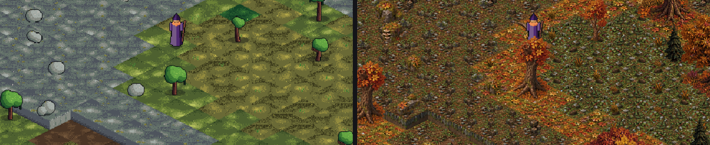

Day one: from an empty folder to wolves on a phone
22 September 2026 · Day 1
In one afternoon Sprawl went from nothing to a walkable world with magic, villagers, a notice board nobody wrote and a wolf pack that holds a grudge, running on Android. By midnight the world was drawn in painted autumn tiles.

The idea
Sprawl is an open-world isometric RPG built on one bet: magic is a substrate, not a class. Everyone in the world can handle it, and almost nobody throws fireballs. A brawler isn't "a fighter instead of a mage." He is a mage who only ever learned to point the current inward, into bone and skin and the moment of impact.
A spell is a point on four axes: what it's made of, where it points, the shape it takes, and how long it holds. That gives over a thousand legal spells before anything is tuned, and nobody had to write a spell list.
The afternoon
The first commit, at four o'clock, was the core that everything else stands on: the magic lattice, a disposition that measures how you actually play, and quests that emerge from what happens rather than being scripted. None of it touches the game engine, so it can be tested in seconds and run on a server later.
After that the pieces came quickly. A heightmapped world grew water and woodland in clumps rather than noise. Casting into the world had every effect checked for legality and cost. A hamlet of procedurally built houses, villagers and a day and night cycle came together, with lit windows after dark. Touch controls landed, and by early evening the game built, installed and ran on Android. Then came wolves and combat, and the loop closed with a fight against the pack's matriarch.
Nobody scripted the matriarch
Kill enough wolves and the pack sends its matriarch after you. There is no rule anywhere in the code that checks how many you've killed. Every act in the world is written to a ledger with its cause. When someone's needs are hurt, the ledger holds a grievance, and the pack's grievance against you grows until the pack does something about it.
The parish notice board works the same way. Villagers who can write post petitions about the things that are actually wronging them. A villager who can't write builds up pressure instead, and eventually acts on it.
The bug that taught us to test input
At eight in the evening the build looked fine and did nothing: the scene loaded, but not one key worked. The key bindings had been written by hand into Godot's project file, in a format Godot silently reads as nothing at all. Screenshots all looked perfect, because a screenshot proves the game renders, not that it responds.
The fix came with a rule that has held ever since: an automated check presses real keys and confirms the game reacts, and every change to input or on-screen controls has to pass it.
Painted by evening
The art target is dark, painterly and high-contrast: deep shadows and glowing lights. The first slice used ground generated from code, which didn't look like that. So in the evening the team built tools that cut tiles out of painted reference sheets, fit each piece to the isometric grid and packed them into art sets. Autumn became the default, with summer as an alternative, and the stone cottages were painted to match, with windows that light up after dark.

The HUD got the same treatment the same night: warm dark panels with bronze frames, and slots big enough to tap.
End of day one: 240 tests, one hamlet, one wolf pack, and a game you can hold in your hand.